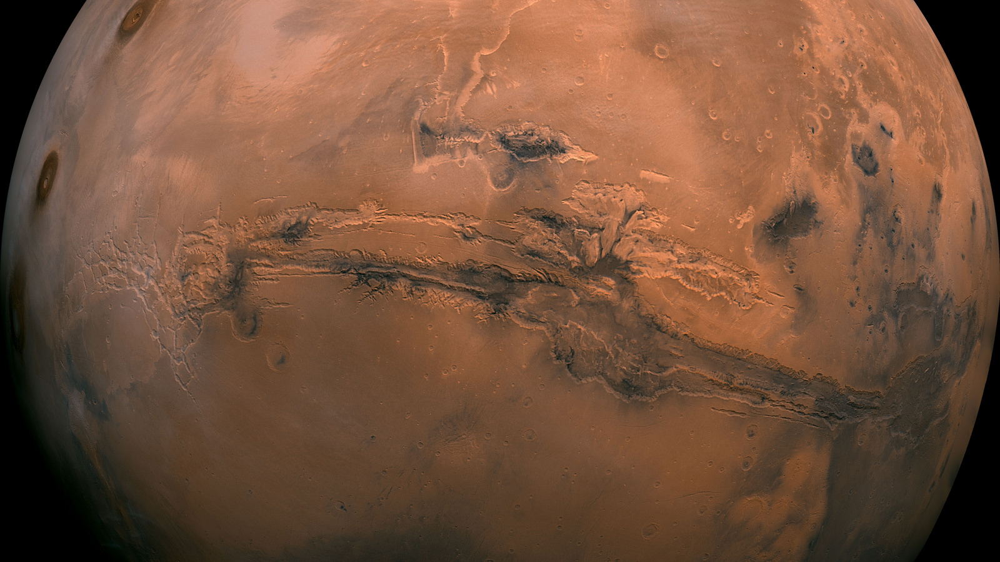
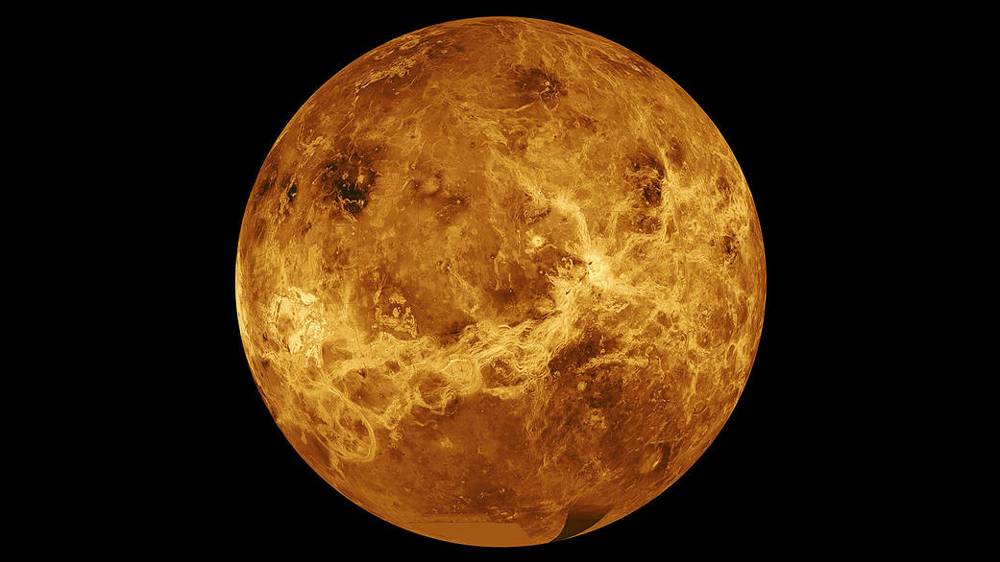
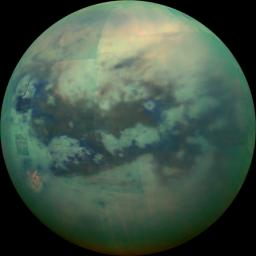

life on planet Earth

Earth is the third planet from the Sun and the only astronomical object known to harbor life. While large volumes of water can be found throughout the Solar System, only Earth sustains liquid surface water. About 71% of Earth's surface is made up of the ocean, dwarfing Earth's polar ice, lakes, and rivers. The remaining 29% of Earth's surface is land, consisting of continents and islands. Earth's surface layer is formed of several slowly moving tectonic plates, interacting to produce mountain ranges, volcanoes, and earthquakes. Earth's liquid outer core generates the magnetic field that shapes Earth's magnetosphere, deflecting destructive solar winds.
life on Mars
Mars is the fourth planet from the Sun and the second-smallest planet in the Solar System, being larger than only Mercury. In English, Mars carries the name of the Roman god of war. Mars is a terrestrial planet with a thin atmosphere, and has a crust primarily composed of elements similar to Earth's crust, as well as a core made of iron and nickel. Mars has surface features such as impact craters, valleys, dunes, and polar ice caps. It also has two small and irregularly shaped moons, Phobos and Deimos.
life on Venus
Venus is the second planet from the Sun and is named after the Roman goddess of love and beauty. As the brightest natural object in Earth's night sky after the Moon, Venus can cast shadows and can be visible to the naked eye in broad daylight.[18][19] Venus's orbit is smaller than that of Earth, but its maximal elongation is 47°; thus, at latitudes with a day-night cycle, it is most readily visible for up to a few hours following the start of sunset or before sunrise. At times, it has been seen in a completely dark sky. Venus orbits the Sun every 224.7 Earth days.[20] It has a synodic day length of 117 Earth days and a sidereal rotation period of 243 Earth days. Consequently, it takes longer to rotate about its axis than any other planet in the Solar System, and does so in the opposite direction to all but Uranus. This means that the Sun rises from its western horizon and sets in its east.[21] Venus does not have any moons, a distinction it shares only with Mercury among the planets in the Solar System.
life in the outer solar system
The outer region of the Solar System is home to the giant planets and their large moons. The centaurs and many short-period comets also orbit in this region. Due to their greater distance from the Sun, the solid objects in the outer Solar System contain a higher proportion of volatiles, such as water, ammonia, and methane than those of the inner Solar System because the lower temperatures allow these compounds to remain solid.